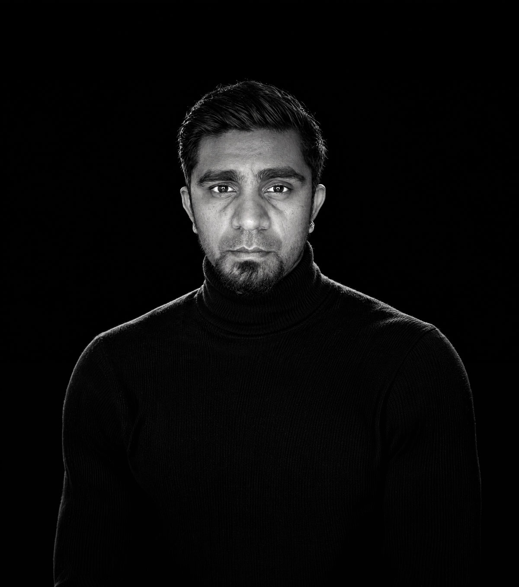

Direction artistique
Nom, logo, typographie, couleur, principes de mise en page. Je construis des systèmes que vos équipes tiennent sans moi, sur un flyer comme sur une façade de boutique.
À propos · Paris · depuis 2013
Treize ans de studio à Paris, à faire la même chose sous des formes différentes : donner une allure juste à des marques qui n'ont pas les moyens d'une agence. Identités, sites, images, emballages. Et depuis huit ans, des classes entières à qui je transmets la méthode.
Vous parlez à la personne qui dessine, qui code quand il faut, qui cadre le shooting et qui répond. Un seul interlocuteur, du premier croquis à la mise en ligne.

Une identité ne vit pas seule. Elle se juge sur la photo qui l'accompagne, le site qui la porte et l'outil qui la fait tourner. C'est pour ça que je couvre toute la chaîne.
Nom, logo, typographie, couleur, principes de mise en page. Je construis des systèmes que vos équipes tiennent sans moi, sur un flyer comme sur une façade de boutique.
Direction de shooting, prise de vue, retouche, montage, motion. L'image est pensée pour son support final, pas produite puis recadrée au hasard.
Parcours, arborescence, maquettes, design system. Je conçois l'écran en gardant en tête le référencement, la performance et la maintenance.
Images et contenus générés dans un cadre de marque, automatisations métier, agents connectés à vos outils. Une pratique quotidienne, pas une démonstration.
Huit ans devant des classes, du BTS au mastère. J'ai appris à expliquer sans jargon, à faire produire vite, et à laisser des supports qui servent encore après le cours.
Sites vitrines et e-commerce : WordPress, Shopify, Webflow, Framer, HTML/CSS. Livrés rapides, propres, avec une prise en main et une formation à la clé.
Pas une liste apprise une fois. Les logiciels que j'ouvre chaque semaine, sur des projets livrés.
 Figma
Figma Illustrator
Illustrator InDesign
InDesign Lightroom
Lightroom Premiere Pro
Premiere Pro DaVinci
DaVinci WordPress
WordPress Elementor
Elementor Shopify
Shopify HTML / CSS
HTML / CSS ChatGPT
ChatGPT Claude
Claude Gemini
Gemini Ollama
Ollama n8n
n8n Notion
Notion Jira
Jira Slack
SlackAussi : Midjourney, ComfyUI, Capture One, Google Workspace, Canva pour les équipes qui travaillent déjà dessus.
Artisans, transporteurs, maisons, cabinets, indépendants. Des structures très différentes, un même besoin : un système clair, tenable, qui vieillit bien.
Collaborations 2019 — 2026. Chaque marque est présentée par son monogramme, dans le même système graphique. Références et cas détaillés sur demande.
La pédagogie n'est pas un à-côté. C'est ce qui m'oblige à garder des méthodes claires, documentées, transmissibles. Et ce qui m'a appris à expliquer un choix en une phrase, ce qui sert aussi en réunion client.
Ce qui explique pourquoi je fais ce métier de cette façon, sans récit héroïque.
Un projet, une formation, un avis ?
Prendre contact